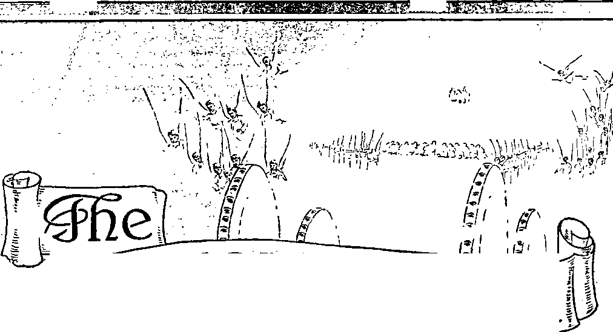
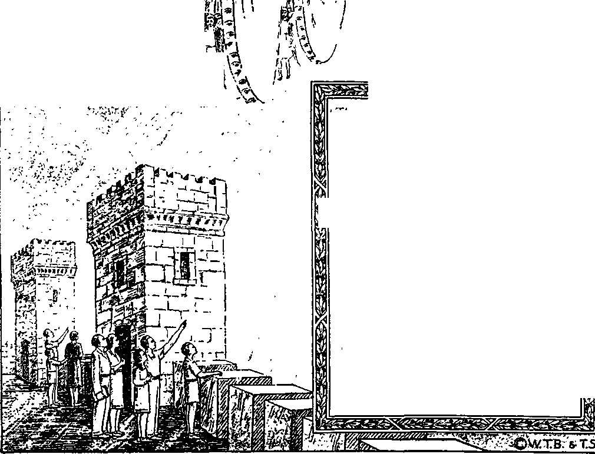

WB
«tqwer
Semimonthly
JANUARY 15, 1941
CONTE NTS
27
29
32
18
18
18
31
19
20
Vol. LXII
“Meet the Lord”
Seven-headed Organization ....
Field Experiences
“Ehud’s Sword” Testimony Period
“Watchtower” Studies
“Satisfied” .. .
1941 Calendar . .
Drama of Vengeance (Part 4)
Wicked Flourish
'Th
1941 Yearbook of Jehovah’s witnesses 18
Published Semimonthly By
WATCH TOWER BIBLE & TRACT SOCIETY
117 Adams Street » - Brooklyn, N.Y., U. S. A.
OFFICERS
J. F. Rutherford, President______W, E, Van Ambuboh, Secretary
“And all thy children shall be taught of Jehovah; and great shall be the peace of thy children .** - Isaiah 54:13.
THE SCRIPTURES CLEARLY TEACH
THAT JEHOVAH is the only true God, is from everlasting to everlasting, the Maker of heaven and earth and the Giver of life to his creatures; that the Logos was the beginning of his creation, and his active agent In the creation of all things; that the Logos is now the Lord Jesus Christ In glory, clothed with all power in heaven and earth, and the Chief Executive Officer of Jehovah.
THAT GOD created the earth for man, created perfect man for the earth and placed him upon it; that man willfully disobeyed God’s law and was sentenced to death; that by reason of Adam’s wrong act all men are bom sinners and without the right to life.
THAT JESUS was made human, and the man Jesus suffered death In order to produce the ransom or redemptive price for obedient ones of mankind; that God raised up Jesus divine and exalted him to heaven above every creature and above every name and clothed him with all power and authority.
THAT JEHOVAH’S ORGANIZATION is a Theocracy called Zion, and that Christ Jesus is the Chief Officer thereof and Is the rightful King of the world; that the anointed and faithful followers of Christ Jesus are children of Zion, members ot Jehovah’s organization, and are his witnesses whose duty and privilege it is to testify to the supremacy of Jehovah, declare his purposes toward mankind as expressed in the Bible, and to bear the fruits of the kingdom before all who will hear.
THAT THE WORLD has ended, and the Lord Jesus Christ has been placed by Jehovah upon his throne of authority, has ousted Satan from heaven and is proceeding to the establishment of God’s kingdom on earth.
THAT THE RELIEF and blessings of the peoples of earth can come only by and through Jehovah’s kingdom under Christ, which has now begun; that the Lord’s next great act is the destruction of Satan’s organization and the establishment of righteousness in the earth, and that under the kingdom the people of good will that survive Armageddon shall carry out the divine mandate to “fill the earth” with a righteous race.
ITS MISSION
Tins journal is published for the purpose of enabling the people to know Jehovah God and his purposes as expressed in the Bible. It publishes Bible instruction specifically designed to aid Jehovah’s witnesses and all people of good wllL It arranges systematic Bible study for its readers and the Society supplies other literature to aid in such studies. It publishes suitable material for radio broadcasting and for other means of public instruction in the Scriptures.
It adheres strictly to the Bible as authority for its utterances. It is entirely free and separate from all religion, parties, sects or other worldly organizations. It is wholly and without reservation for the kingdom of Jehovah God under Christ his beloved King. It is not dogmatic, but invites careful and critical examination of its contents in the light of the Scriptures. It does not indulge In controversy, and its columns are not open to personalities.
Yearly Subscription Price
United States, $1.00; Canada and Miscellaneous Fobeion, $l.B0; Great Britain, Australasia, and South Africa, 6s. American remittances should be made by Postal or Express Money Order or by Bank Draft. Canadian, British, South African and Australasian remittances should be made direct to the respective branch offices. Remittances from countries other than those mentioned may be made to the Brooklyn office, but by International Postal Money Order only.
Foreign Offices
British ...................................... 34 Craven Terrace, London, W.2, England
Canadian...............................40 Irwin Avenue, Toronto 6, Ontario, Canada
Australasian.................... 7 Beresford Road, Strathfield, N. S. W., Australia
South African __________________________Boston House, Cape Town, South Africa
Please address the Society in every case.
(Translations of this journal appear in several languages.)
All sincere students of the Bible who by reason of infirmity, poverty or adversity are unable to pay the subscription price may have The Watchtower free upon written application to the publishers, made once each year, stating the reason for so requesting It. We are glad to thus aid the needy, but the written application once each year is required by the postal regulations.
Kotice to Subscribers: Acknowledgment of a new or a renewal subscription will be sent only when requested. Change of address, when requested, may be expected to appear on address label within one month A renewal blank (carrying notice of expiration) will be sent with the journal one month before the subscription expires.
Entered as second-olass matter at the post office at Brooklyn, N. Y., under the Act of March 3, 1879.
“EHUD’S SWORD” TESTIMONY PERIOD
This midwinter period of special activity will run through the entire month of February. The title thereof calls attention to the zeal, energy and fearlessness with which Ehud used his dagger against King Eglon, and which qualities all publishers of The Theocracy will exercise likewise during this Period. February opens up this year’s three-month Watchtower campaign, and hence all publishers will specialize on securing subscriptions for The Watchtower and offering as a premium the book Religion and the new booklet Satisfied, all on a contribution of $1.00. Arrange now for this Testimony, and, if possible, attend the local company service meetings where this campaign is being discussed and organized. Write this office if you need references. To contribute toward making up the general report of the work and results thereof, please turn in your personal report of what you accomplish.
“WATCHTOWER" STUDIES
Week of February 16: “Drama of Vengeance” (Part 4), fl 1-17 inclusive, The Watchtower January 15, 1941.
Week of February 23: “Drama of Vengeance” (Part 4), fl 18-34 inclusive, The Watchtower January 15, 1941.
“SATISFIED”
In these days of increasing dissatisfaction with everything ot the world, the title of this new booklet, “Satisfied,” strikes the reader with a strong appeal. The contents of this 32-page booklet show how and by whom the heart’s desire of all men of good-will shall early be satisfied. The front-cover picture visualizes the setting of the story as related by the author, Judge Rutherford. Satisfied is now being mailed to all contributing 5c per copy.
1941 YEARBOOK OF JEHOVAH’S WITNESSES
In the face of an almost impossible year the publication of the 1941 Tearbook of Jehovah’s witnesses represents an accomplishment made possible only by Jehovah’s power. Confirmation of this you will find when you read the comprehensive report, as written by the Society’s president, covering the world-wide activities of Jehovah’s witnesses, under continuous enemy fire, during the past service year. Besides this amazing report the Yearbook also offers the president’s comment on the 1941 yeartext and a text with a Watchtower comment thereon for each day of the new year. The edition of the Yearbook is always limited, thus enhancing the costs
(Continued on page 31)
Vol. LXII January 15, 1941 No. 2
PART 4
“When the wicked spring as the grass, and when all the workers of iniquity do flourish, it is that they shall be destroyed for ever."—Ps. 92:7.
TEHOVAH will vindicate his name by destroying I all those who work against his government under J Christ Jesus. It is Satan, that wicked one, operating his religious-totalitarian conspiracy against The Theocracy that is now desperately fighting against Jehovah’s kingdom. There is no compromise and no possibility of peace between God and the wicked. Today the Vatican officials, together with the Fascist, Nazi and Communist dictators, are moving with all their power to destroy everything in the earth that will not submit to their devilish rule. All this is in defiance of Almighty God and a reproach upon his name. Jehovah’s name must be vindicated. It shall be vindicated 1 The only possible way to bring about the vindication of Jehovah’s name is the complete destruction of the wicked, which means the complete destruction of every part of Satan’s organization. Satan and his demon army must now confine themselves to the earth, and, doing so, Satan has put into action the religious, official organization, and the political organization, and all others supporting Satan’s side, all of which are wicked because they are against The Theocracy. At the battle of that great day of God Almighty, he declares, all the wicked shall be destroyed.
2 But when will the battle be fought that results in the destruction of the wicked? No man could fix the day, but the circumstantial evidence in fulfillment of prophecy can approximate the date. The text first above quoted, at the head of this article, answers the question. The rendering of this text by Rotherham throws more light upon the subject: “When the lawless bud like herbage, and all the workers of iniquity have blossomed, it leadeth to their being destroyed for ever. But thou art on high to the ages, 0 Jehovah! for lo! thine enemies, Jehovah, for lo! thine enemies shall perish.”—Psalms.
3 Never in all time have the nations of the earth been so completely under the domination of that wicked one as now. More subtle is the work of the wicked ones now than in the days of Noah. Without a question of doubt dictators are the instruments of the Devil, that supreme wicked one. The Nazi-Fascist axis has but one objective, and that is the destruction of everything that will not submit to their arbitrary rule. In their wicked course they are fully backed and supported by the Vatican, the astute head of which advises, aids and consorts with the other conspirators. While this is being written the newspapers of Berlin, with blaring headlines, announce that the dictator Hitler has declared that he has received from God the commission to destroy England, all of the men, women and children. He does not say from what god he received that information; and everyone who believes Almighty God knows that the god of Hitler is “the god of this world”, to wit, the Devil, that old wicked one. (1 John 5:19; 2 Cor. 4: 4) The Vatican and other members of the Roman Catholic Hierarchy fully support Hitler and commend him for the destruction committed in Belgium, Holland, France and other places. It is now, therefore, that the wicked have sprung up as grass, when they have budded like the herbage of the fields, and when all the workers of iniquity or lawlessness have blossomed ; and the Lord declares that when this appears and is manifest in the earth “it leadeth to their being destroyed for ever”. It therefore appears to be certain that Armageddon, that great battle of God Almighty, is near at hand. All nations are against The Theocracy; therefore God’s faithful and devoted people, members of his organization, are designated as God’s “holy nation”.—1 Pet. 2: 9,10.
‘ During the World War the visible rulers of earth induced the masses of the people of the nations to believe that democracy, that is, a rule by the people and for the people, would flourish and abide forever. That was clearly a deception. Every action has been taken by the great religious leaders, and the rulers of Europe in particular, to destroy democracy, and that is about accomplished. Those who devote themselves to Jehovah God and his King, and who familiarize themselves with the Word of God, as written in the Bible, know therefrom that democracy has not long to continue, and therefore they boldly de-19
clare the same. But their report was not believed by the religious and political rulers and their supporters. Most of the worldly governments relied upon the League of Nations to establish peace and to prevent war. The religious leaders, at the time of the formation of the League of Nations, issued the statement that “the League of Nations is the political expression of God’s kingdom on earth” and that therefore now peace had come to stay. Their prophecy was far short of the facts. The servants of Jehovah, being witnesses to his name, plainly informed the religious organizations that, according to the Word of God, the League advocates were wrong in their conclusion and that, instead of peace, the worst tribulation ever known must soon come upon the earth. (Matt. 24: 21,22) Because Jehovah’s servants proclaimed these and other like truths the religious and political elements of the nation regarded such servants of Jehovah as plain “nuts”, fairly well “cracked”, and frequently so published in their press. Jehovah’s witnesses continued to call attention to the prophecies of Revelation, and other parts of the Scriptures, that God’s prophecies were now due to be fulfilled and would be fulfilled.
5 Germany had been defeated in that war, and therefore one of the heads of “the beast” described in Revelation received a deadly wound. The Scriptures declared, and Jehovah’s witnesses so called attention thereto, that the vanquished side or ‘wounded head’ would come back, with the head healed, and that all the nations would be astounded. (Rev. 13:1-8) (Light, Book One, page 269) Germany was for many years the chief support of Rome, and the dominant people in the “Holy Roman Empire”. Mark the title that was given to that religious organization, as set forth in history: “Holy Roman Empire of the German Nation.”
WICKED FLOURISH
6 One of the names given Satan is that of serpent, meaning “deceiver”. He employed fraud and deceit to accomplish his purpose from the beginning, and even today continues it. The chief instrument for deception has been and is religion. The Roman Catholic “Hierarchy of Authority”, operating from Rome, is admittedly in the lead of all religious organizations on the earth and carries forward what it calls “Catholic Action”, operating always for a wicked purpose. The present pope is undoubtedly the most astute politician that has occupied the papal office in many centuries. He was secretary of state during the administration of his immediate predecessor. The purpose of the Vatican in its movement called “Catholic Action” is to gain control and rule the world, and, to do that, it demands the re-establishment of the old “Holy Roman Empire”. The dictators accede to his demand and proceed in the establishment of Rome on its old basis. To deceive the people the pope claims to be the servant of God, but, in fact, he is the chief visible enemy of Jehovah God and his kingdom. “Catholic Action” began in Germany to bring about the healing of that German head described in Revelation thirteen. The nations and the people thereof are now advised of the result. Hitler, the dictator, was put in power by the connivance and allied action of the religious politicians of various nations of the earth, many of whom were members of the League of Nations; and all of this movement is a conspiracy against Jehovah God and his Theocratic Government under Christ Jesus. The religious, political, commercial elements furnished the brains and the money to put Hitler into office, but the whole scheme originated with and was directed by Satan himself. It has been suggested that Hitler is Gog, Satan’s chief marshal, appearing in the flesh. Whether that is true or not, Hitler is an instrument completely in the employ and use of the Devil. Much of the support to put Hitler in power came from the United States. Now the work of reestablishing the old “Holy Roman Empire” is well under way. Many who are induced secretly to support this re-establishment of the old “Holy Roman Empire” are certain to rue their action and come to great grief.
’Do the wicked flourish now? They do, most emphatically. Since the end of the World War the wicked have sprung up like grass, as in favorable weather seasons. The workers of iniquity have blossomed and produced their fruit. Those workers of lawlessness have not the least sense of righteousness, but are entirely wicked. They are against everything that is righteous because they are depraved beyond recovery and are fully wicked. “Catholic Action” pushed forward openly by dictators has now destroyed the freedom of Europe. The wicked rule continental Europe, and the common people mourn and are in great distress, exactly as declared would be the case. (Prov. 29: 2) Now wickedness flourishes “like a green bay tree”. (Ps. 37:35) Like that species of tree, the wicked spread out over the ground and grow in crooked and distorted form. Now the dictators, backed up by the Vatican, the chief hatchery of dictators, spread out over the earth and are grabbing everything on the earth. The head of that beast that received the deadly wound is healed, and the Papacy is riding on the back of that beast. So completely does the Vatican control that beast, aligned with the politicians and the commercial leaders, that the newspapers and other publications of the world, even in the lands yet called “democracies”, refuse to speak out and tell the people that the real enemy that is destroying liberty and all freedom of thought and action is that religious organization operating from Vatican City in Italy.
8 Today the British people, with their backs to the wall, are fighting for an existence. Dictators, urged on by the Vatican crowd, carry on the wickedest slaughter ever known to human creatures. The weak, the lame, the sick, the poor, the defenseless children, are all alike victims of the bloodthirsty religious, dictatorial conspirators. Children fleeing from the wicked slaughter in the land are sent by ships to America, and on the way the dictators murder them by dynamiting the ships. The wicked have grown very strong, and all the workers of iniquity and injustice flourish.
9 Who is willing to proclaim the truth now in this hour of the world’s great distress? Only those who have full faith and confidence in Jehovah God and his Theocratic Government under Christ Jesus. Every person on earth who truly loves righteousness and hates wickedness now deeply sympathizes with the people of the British Isles. The people of that nation, more than any other nation now on earth, have believed the Bible to be God’s Word of truth, and they have endeavored to teach their children the Scriptures. They have for centuries steadfastly resisted the Papacy and its wicked practices. Stealthily and gradually the Vatican, with its Jesuit agencies operating subtly amongst the people, have put fear into the public press and into the politicians, and even now in England’s hour of dire distress the public press remains silent concerning the fact that the religious organizations, led by the Roman Catholic Hierarchy, demand that Britain shall suffer for her opposition to the Papacy manifested during the centuries past. The Roman Catholic Hierarchy has a strangle hold on the public press, and by the practice of fraud and deceit the people are kept in ignorance of their real foe.
10 Amidst the most murderous assault ever committed upon a freedom-loving people the faithful Christians of the British Isles raise high the banner of The Theocracy and boldly and fearlessly point to that government under Christ Jesus as the only hope of humankind. Recently Jehovah’s witnesses assembled in conventions in that land, which were attended by thousands of Christian and God-fearing people, and for three days carried on their program of Bible study while the bombs of the dictators continued to crash around them. At Manchester four thousand assembled in Free Trade Hall to worship Almighty God and, while engaged in worship, for hours the Vatican-German bombs fell about them, destroying buildings within three hundred feet of that hall. That crowd of four thousand people, having faith in God, remained at their post and went forward with their program of Bible study and worship regardless of the murderous assaults by the enemy. Did the Lord protect those assemblies of Christians? We think he did, and we praise his name for his loving-kindness. Shortly thereafter, in Edinburgh, Scotland, another large assembly of Jehovah’s witnesses carried forward their program for several days in meetings as well as in their field work, while the enemy bombed the city and vicinity. All who love righteousness must sympathize with and admire the steadfast resistance by the British people against a murderous assault carried on by the great religious organization and the dictators of the continent.
11 Other portions of the British Empire, including many island possessions and also Canada, which is a part of the Empire, have yielded to the wicked influence of the Roman Catholic Hierarchy and have arbitrarily and without any reason or cause stopped the public witness work of the servants of Jehovah God. Thus far in England, Scotland and Wales Jehovah’s witnesses have been permitted to go forward with the Kingdom work in advising the distressed population that God foretold these dreadful days and that his kingdom now at hand is their hope and relief. Of course, no man can authoritatively state what God will do, but it may be that, because of the righteousness-loving people of the British Isles who boldly declare the name and kingdom of Jehovah God, and because of the great number of people residing there who are of good-will towards God’s kingdom, and because of the bold stand the British people are making against the Papal dictators, the Lord God may show some special favor to that land and not permit the wicked to destroy that country. If the public officials of England and the public press of that land would have and exercise faith in God and in Christ, and boldly take their stand against the subtle Roman Catholic enemy, and for God and His King, there is no doubt that the Lord would spare that people. It is a time of great testing, and all who will seek the Lord’s way will be shown the right way.
12 The Watchtower rejoices with the faithful servants of God, Jehovah’s witnesses and their companions, who are showing their determination to continue to faithfully serve Jehovah God and Christ his King and to proclaim The Theocracy amidst the greatest opposition. These faithful Christians have no fight with earthly governments, but their fight is for righteousness to aid the people to see the only hope of salvation. The faith and confidence of those of the faithful servants of the Most High will be rewarded by Jehovah God, and The Theocracy is their refuge and strength: “Kiss the Son, lest he be angry, and ye perish from the way, when his wrath is kindled but a little. Blessed are all they that put their trust in him.”—Ps. 2:12.
18 Because the wicked have in recent years sprung up like the grass and such do now flourish in the earth, this is clearly seen to be further and corroborative evidence that God’s due time is at hand when the wicked shall be destroyed for ever. Let all lovers of God and his King fully and completely put their trust in Jehovah and his Theocracy. In the language of the Lord Jesus, let them look up and lift up their heads and rejoice because of the full assurance that the day of deliverance and salvation is at hand: “But I have trusted in thy mercy; my heart shall rejoice in thy salvation.”—Ps. 13: 5.
14 Returning now to the consideration of the prophetic drama of vengeance, and seeing from other scriptures that the time for the fulfillment of that prophecy is here, we will continue its study with the keenest interest and thankfulness to the Lord. From previous issues of The Watchtower calling attention to this prophecy, and in our study thereof, it appears that the enemy of God’s faithful people, the Israelites, was in the valley of the river Kishon, there drawn up in battle array and moving forward against the Israelites. Probably almost all that army had crossed the dry bed of that river. Barak, with his army of ten thousand, was on the opposite side of the valley and on the slope of Mount Tabor where he had been directed by Jehovah to assemble his army. At this point the Lord God was putting down a great barrage of rain, lightning and wind before the army of the Israelites and against the army of the enemy; and Barak, taking advantage of this, had begun to move his army forward and behind that storm. Jehovah was fighting the battle for his chosen, typical people. “And the Lord discomfited Sisera, and all his chariots, and all his host, with the edge of the sword, before Barak; so that Sisera lighted down off his chariot, and fled away on his feet.”— Judg. 4:15.
1S Up to this point Barak had not struck a blow against the enemy. Before his army of ten thousand got into actual fighting with the enemy the Lord God began to fight against the Canaanites by exercising His superhuman power. Thus he gave unmistakable proof that the battle was God’s, and not man’s, and thus he pictured that the battle of Armageddon will be God’s, and not man’s. Sisera and his host and iron chariots were unable to withstand the onslaught of the superhuman powers. No human power, and no other power, for that matter, can successfully fight against Jehovah and his hosts. The manner of the assault by Jehovah Deborah describes in the victory song in these words: “By the waters of Megiddo . . . They fought from heaven; the stars in their courses [manifestly spirit hosts of heaven gathering to war under the command of the Lord] fought against Sisera. The river of Kishon swept them away, that ancient river, the river Kishon.” (Judg. 5:19-21) Those who love righteousness and hate wickedness will take great courage from this because they know it foreshadows what will take place at Armageddon.
w It was in the dry season of the year that the battle at Kishon was fought, and therefore the river bed was dry. Sisera appears to have marched his army across that dry bed of the river and was in the bottom land or flat lands or plains, and going up to the attack of Barak’s forces. Megiddo was in his rear, and evidently floods of waters came from that direction. The Lord caused the sudden and terrific cloudburst in the mountains and hills round about, both in the rear of Sisera’s army and in his front. A great wall of water swept down from Megiddo, as well as from the mountains and hills on the east side of the river. Human power could not withstand such a terrific assault. The waters from heaven swept the iron chariots away, and the horses mired down in the mud and gravel, and broke their hoofs. (Judg. 5: 22) The bed of the river could not carry away the torrential waters, and soon out of its banks the waters swept along the plain with a great and irresistible force. The infantry of Sisera’s army would be caught in that torrential flood and find their horses and chariots useless. Many would try to escape on foot, while others would loosen the horses from chariots and try to escape on them, but all to no effect. The army was completely disorganized, although some of the men escaped. The power of Almighty God was being used against them and doubtless he permitted some of them to escape for a time to carry out the completeness of the picture. The waters, rushing down from the high land of Megiddo, would force the hosts of Sisera to flee to the higher lands on the opposite side and that would lead them right into the trap which the Lord had set for them with the ten-thousand-Israelite-soldier army with swords. With these ready instruments Barak’s army could pick off the terrified and fleeing Canaanites and smite them. The fleeing ones were punished by the little army under command of Barak.
17 Among the escaping ones was Sisera, the commander of the army. He did not stick with and go down with his soldiers, but he “lighted down off his chariot, and fled away on his feet”. Sisera’s chariot stuck in the mud, and, his horses floundering helplessly in the flood, Sisera had to take to the water and get away the best he could. He clambered out of the water and mud and had only his feet to carry him away. Doubtless the Lord let him escape for a time, as shown by what came to pass shortly thereafter, and this for the purpose of completing the picture foreshadowing Armageddon. It appears that not one of the bodyguard or military staff of Captain Sisera was permitted to escape and flee with him. Sisera, the great captain, had to hit out for the hills on foot and alone. The religious leaders will find themselves in the same predicament. Some of his army got out of the flood and fled as far as Endor and perished there, which is a symbol of those who flee to demons or demon representatives and who shall come to an untimely end.—Ps. 83: 9,10.
18 The minute description of the battle as given in Judges chapters four and five is, without doubt, for the purpose of giving courage, comfort and hope to the faithful servants of God now on earth, and who are feeling the oppressive assaults of the wicked and iniquitous ones. The Roman Catholic Hierarchy and other religious, demonized supporters are marching rapidly to accomplish the destruction of the servants of Jehovah God. They are under the command of the Devil and the immediate leadership of Gog, the chief marshal of the Devil’s forces. On the earth the Nazi-Fascist-Papal-combine dictators are commanding the forces of wickedness, all of which now prosper and flourish. To that wicked and boastful, arrogant, disdainful crowd the war seems easy and a light job, and they are for a time feeling confident that they will destroy every supporter of The Theocracy. In advance they begin to mark out what they will do after they win. In that they will have to change their tune. They now think themselves certain of victory and boast of the fact that when the battle of that great day of God Almighty comes they will be entirely safe and at rest. But what will the Roman Catholic Hierarchy and other demonized allies do then? When they see the Lord taking a hand and fighting for His people they will take to their heels as Sisera did, but, says the Lord’s Word, ‘‘they shall in no wise escape.” (1 Thess. 5: 3, A.R.V.) The prophetic drama covers this, and the emphatic statement of the inspired apostle corroborates the prophecy. Thus by at least two witnesses the matter is made sure, and everyone who is fully devoted to Jehovah God and his Theocracy has no reason whatsoever to doubt what will be the final result. It is necessary for all such, however, to keep in mind God’s sure promises, that having promised to do he will certainly perform. When Jehovah causes to be recorded in his Word a prayer, which he puts into the mouth of his servants, and to be uttered before him, it is certain that such prayer is an expression of Jehovah’s will and purpose to be performed by him in his own due time. The eighty-third Psalm discloses the formation of a conspiracy by religionists against God’s typical people, which foreshadows a conspiracy by the religionists and other allied elements against the kingdom of God under Christ Jesus. According to that prophecy of the Lord the purpose of such conspiracy is to destroy the servants of Jehovah and to prevent The Theocratic Government from operating. Therefore the wicked workers of iniquity are determined to rule the earth contrary to the will of Almighty God. (See Psalm 83:2-8.) Then follows the prayer of God’s oppressed people addressed to the Most High in these words, asking the Lord to fight their battles for them and to utterly destroy the enemy. That prayer is: “Do unto them ... as to Sisera, as to Jabin, at the brook of Kison; which perished at Endor; they became as dung for the earth.” (Ps. 83: 9,10) Jehovah is certain to hear and to answer that prayer, and to do exactly the things stated in the prayer, because he has made known that such is his will and his purpose. Let all who have this faith and trust in the Lord God implicitly, and in his beloved Son, Christ Jesus, rejoice in his salvation that is certain to come to those who remain steadfast and faithful. “But Barak pursued after the chariots, and after the host, unto Harosheth of the Gentiles; and all the host of Sisera fell upon the edge of the sword; and there was not a man left.” —Judg. 4:16.
18 Here is further proof that none of the workers of iniquity shall escape. God permitted the faithful soldiers under Barak to have a part in the battle defeating the enemy. True to his name “Lightning”, with lightning speed Barak pursued the fleeing and discouraged army of Sisera. With his smaller army of only ten thousand men Barak did a good cleaning up of the job. He cleared the enemy out completely, and there was ‘not one man left’. His soldiers picked off every fleeing one and put them to the edge of the sword. Only Sisera himself escaped the sword of Barak’s army, but Jehovah doubtless permitted this to make another important picture.
20 At this point in the prophetic drama Barak played the part picturing Christ Jesus and his invisible army of heaven made up of the angelic host that follow after the victorious Christ Jesus. (Rev. 19:11-21) This picture shows that the invisible host actually in the battle of Armageddon literally complete the wrecking of that “abomination that maketh desolate”, namely, the religious-dictatorial crowd that is determined to rule the world in defiance of God and that stands in the place of God’s Theocratic government, even as Daniel in his prophecy quoted by the Lord Jesus shows. (Dan. 11: 31; 12:11; Matt. 24:15) In that complete cleanup, which the Lord will accomplish, all the allies of the Hierarchy, all the workers of iniquity, and all who are enemies of Jehovah God and enemies of his Theocratic Government shall perish. All such the Lord designates as “goats”, whose end is “everlasting [destruction] prepared for the devil and his angels” or supporters. (Matt. 25:31-41) Further scriptures corroborative of the complete destruction of the enemy at Armageddon are the following: “And Enoch also, the seventh from Adam, prophesied of these, saying, Behold, the Lord cometh with ten thousands of his saints, to execute judgment upon all; and to convince all that are ungodly among them of all their ungodly deeds which they have ungodly committed, and of all their hard speeches which ungodly sinners have spoken against him.” (Jude 14,15) The Almighty God is the shield and protector of his people, and he will fight for them: “And ye shall flee by the valley of my mountains; for the valley of the mountains shall reach unto Azel; yea, ye shall flee, like as ye fled from before the earthquake in the days of Uzziah king of Judah; and Jehovah my God shall come, and all the holy ones with thee.”—Zech. 14: 5, A.R.V.
21 In these days of wickedness and wicked deeds committed by the Hierarchy and allies against harmless people because those people proclaim the name and kingdom of Jehovah God, when those workers of iniquity falsely charge Jehovah’s witnesses with the crime of sedition, cause their arrest and imprisonment, and refuse to bring them to trial and give them an opportunity to prove their innocence; when the wicked Hierarchy and agents commit the dastardly crime of castrating a man because he is a witness of Jehovah; when the houses, automobiles, clothing and other property of innocent people are destroyed by the same workers of iniquity, merely because such men and women tell of The Theocratic Government of Almighty God; when Jehovah’s witnesses are kidnaped and driven like wild beasts from one place to another, and the officials of the government take no action against the confessed criminals; all these things are evidences that this is the time when the wicked have grown up like grass, and the workers of iniquity blossom and flourish. All these things cause honest people to become righteously indignant.
22 Order-loving people, who believe in fairness, are caused to open their eyes to the situation and to see that none except the Devil could organize and carry forward in overt acts such a wicked conspiracy against harmless people. Many ask, Will there be no squaring of accounts? Will these wicked ones not be punished? The Lord Jehovah says to his faithful servants: ‘I will avenge mine elect; wait upon me till I rise up to the prey; I will fight the battles and see that none of these wicked ones escape.’ “Therefore wait ye upon me, saith the Lord, until the day that I rise up to the prey; for my determination is to gather the nations, that I may assemble the kingdoms, to pour upon them mine indignation, even all my fierce anger; for all the earth shall be devoured with the fire of my jealousy.”—Zeph. 3:8.
28 In view of these innumerable crimes committed by the religionists and allies, and in view of the prophecies bearing squarely upon the point, and God’s promise to avenge his elect, let Jehovah’s faithful servants now wait upon the Lord and fully trust him. As soon as he has promised he will destroy the wicked for ever. (Ps. 92: 7) The lovers of righteousness can afford to wait for the Lord to act. They cannot afford to take any other course. The faithful servants of Jehovah will wait upon him because they know he will act in his own due time and will completely wipe out the enemy.
24 In the prophetic drama it is written that Barak made a lightning pursuit of the enemy, to wit: ‘He pursued after the enemy unto Harosheth of the Gentiles, and all the host of Sisera fell upon the edge of the sword.’ True to the prophetic picture, Christ Jesus, the Greater Barak, with lightning speed, together with his heavenly army, will pursue the enemy at Armageddon; and, beginning with religion, and particularly the Papacy, which is now urging on the dictators to acts of supreme wickedness, the Lord Jesus Christ will literally and completely destroy the enemy. The totalitarian, religious monstrosity shall not rule the earth, because Jehovah has decreed that such wickedness shall come to a complete end. The Lord has made this part of the prophetic drama to give further assurance to God’s people that he will fight their battles to a complete victory.
25 The sword is a symbol of the destructive weapon of the Lord, which he will use against the enemy at Armageddon: “The Lord at thy right hand shall strike through kings in the day of his wrath. He shall judge among the heathen, he shall fill the places with the dead bodies; he shall wound the heads over many countries.” (Ps. 110: 5, 6) That wickedness shall then cease and the workers of iniquity end for ever the Lord further declares: “Thus saith the Lord, which maketh a way in the sea, and a path in the mighty waters; which bringeth forth the chariot and horse, the army and the power; They shall lie down together, they shall not rise; they are extinct, they are quenched as tow.” (Isa. 43:16,17) “Come, behold the works of the Lord; what desolations he hath made in the earth. He maketh wars to cease unto the end of the earth; he breaketh the bow, and cutteth the spear in sunder; he burneth the chariot in the fire.” (Ps. 46:8,9) “At thy rebuke, 0 God of Jacob, both the chariot and horse are cast into a dead sleep. Thou, even thou, art to be feared; and who may stand in thy sight when once thou art angry? Thou didst cause judgment to be heard from heaven; the earth feared, and was still, when God arose to judgment, to save all the meek of the earth. Selah.”—Ps. 76: 6-9.
28 “Lightning” (Barak) with his ten thousand acted the part of executioner for and in the name of Jehovah God. Thus “Lightning” foreshadowed Christ Jesus as the Executioner at Armageddon, and when Christ Jesus will be supported by all of his heavenly host. This is in exact harmony with the record which God made with Jehu, who executed the demon practitioners of religion in his day. He caused the religionists to don the vestments of their religion and to thus identify themselves as being demonized or worshipers of demons. Likewise today the Lord is causing the people to take their stand on one side or the other. All will thus fix their own destiny by placing themselves on the side of death or on the side of life. The religionists and allied workers of iniquity will identify themselves as enemies or “goats”, which is a symbol of that which will be destroyed. When King Jehu had caused the religionists to identify themselves, then what followed? The Scripture account reads: “And when they [the religionists] went in to offer sacrifices and burnt offerings, Jehu appointed fourscore men without, and said, If any of the men whom I have brought into your hands escape, he that letteth him go, his life shall be for the life of him. And it came to pass, as soon as he had made an end of offering the burnt offering, that Jehu said to the guard and to the captains, Go in, and slay them; let none come forth. And they smote them with the edge of the sword; and the guard and the captains cast them out, and went to the city of the house of Baal. And they brought forth the images out of the house of Baal, and burned them.”—2 Ki. 10: 24-26.
27 That corresponds exactly with what Christ Jesus will do to the “goats”. (Matt. 25:41,46) Not one of the “goats” will escape. “And the slain of the Lord shall be at that day from one end of the earth even unto the other end of the earth; they shall not be lamented, neither gathered, nor buried; they shall be dung upon the ground. And the shepherds shall have no way to flee, nor the principal of the flock to escape.”—Jer. 25:33,35.
28 “Howbeit, Sisera fled away on his feet to the tent of Jael the wife of Heber the Kenite; for there was peace between Jabin the king of Hazor and the house of Heber the Kenite.” (Judg. 4:17) Sisera was looking out for himself. Instead of acting like a brave soldier and sticking by his army, he tried to get back to his base of operations at Harosheth and let his army do the best they could. He fled across the country toward Hazor, the chief residence of his king Jabin, and, for fear of being cut off in his flight, Sisera took a roundabout course, evidently thinking that no one would look for him where he was going. He sought the tent of a married woman. At least he was risking being detected there contrary to the custom amongst the people. He was scared, and he thought to put himself under the protection of a woman. Likewise the Roman Catholic Hierarchy attempt to make themselves secure amongst women and induce women to go about and carry forward their schemes and to exercise their influence over men, and by that means gain control of men. When those of the Hierarchy priests are found out, as they are now discovered, they, as the Scriptures declare, become as women and refuse to fight in the open, and hide behind the skirts of others. (Jer. 51:30) This suggests that the Hierarchy and Jesuit priests will find themselves in a position similar to that pictured by Captain Sisera. That day must be near, because the Hierarchy’s agents are flourishing.
29 Sisera sought refuge in the tent of Jael, the wife of Heber the Kenite. Her name means “wild goat” or “mountain goat”, that is, as one being a climber or ascender, going higher up. David once took refuge amidst the wild goats. (1 Sam. 24: 2) “The high hills are a refuge for the wild goats, and the rocks for the conies.” (Ps. 104:18) Heber, the husband of Jael, resided in a tent near the royal residence of King Jabin, and it appears that he was at peace with Jabin. This does not at all mean that Heber was allied with Jabin. He was a peaceable man. No doubt God had caused Heber to pitch his tent near Jabin for an express purpose. Heber’s peaceful relationship with Jabin proved to be a trap for Captain Sisera. Those who will compose the “great multitude” have apparently been on good terms with the religionists. At least there have been no open hostilities between religionists and those who will compose the “great multitude”, until such time as those persons of goodwill toward God and his government take their firm and unequivocal stand on the side of The Theocracy. When Barak and Deborah moved out to take action according to the command of Jehovah against the oppressors of Israel the time had arrived when the house of Heber must take a stand on one side or the other. There is nothing in the record showing that Heber took his stand on the side of The Theocracy, but mark the choice that his wife made. This strongly indicates, as the picture shows, that one member of a household will take the side of the Lord and his government of righteousness, while another member of the same household may remain on the side of those against The Theocracy. This takes place, and is taking place, when the Lord separates the “goats” from “his sheep”. “And Jael went out to meet Sisera, and said unto him, Turn in, my lord, turn in to me; fear not: and when he had turned in unto her into the tent she covered him with a mantle.”—Judg. 4:18.
30 Sisera was eagerly seeking seclusion where he could get some rest and hide out from those who were pursuing him. In this he pictured the religious leaders who have since 1922, when the flood of truth pursued them, eagerly hunted a place of rest where they might be protected and where their religious susceptibilities would not be shocked. As Jehovah’s witnesses become more active, and necessarily more efficient, in their work and in advancing and in proclaiming the Kingdom message, the clergy become more fatigued and more fearful, therefore desperate.
81 The appearance of Sisera alone and afoot would be proof that he had met a sore defeat and was fleeing for his life. That would be apparent to everyone who was watching his flight. No doubt observers of the battle in the valley, and who had seen the mighty flood of waters sweep away the invaders, had by grapevine methods transmitted that information to others and Jael would be informed of the defeat of Sisera’s army and his deplorable condition. She saw him approaching her tent, and so she went out to meet him. That apparently was a friendly act on her part. The time had come when she must make a decisive move, and no doubt the Lord was maneuvering her that she might perform her part in the great prophetic drama that was then being made. The time had come when she must either yield to the oppressive iron rule and continue under Jabin and Sisera, and suffer with the Israelites, or take her stand firmly on the side of Israel, God’s chosen people. The question was raised in her mind, Should she aid Sisera to get back to Jabin and continue to fight against God’s typical people and also put fear in the mind of all persons friendly to the Israelites, or should she do her part in an opposite direction ? That was a crucial hour and a crucial test for her, and doubtless the Lord had steered Sisera to her tent that she might be put to this test and thus make her part of the picture. “Known unto God are all his works from the beginning.” (Acts 15:18) Foreknowing that he would have the Greater Barak, Christ Jesus, to gather unto himself another flock of “sheep” aside from the spiritual class, God was at this point of the drama making a picture of that very thing. The facts show that Jael acted with discretion and exercised wisdom.
32 When Sisera approached she “said unto him, Turn in, my lord, turn in to me”. That was a further evidence of friendliness manifested by her. Jael was a mere woman and there alone at her tent. She knew that she could not attack a mighty warrior such as Sisera on equal terms. He was a seasoned soldier, and now because of his defeat he was greatly embittered. The gravity of the occasion would overshadow the custom of married women not to invite a lone man into their tent. Jael did take advantage of the situation by notifying the fleeing general to turn in to her tent, which would be an indication that Heber’s house was still friendly to the Canaanites. What plans she had in mind is not disclosed at this point, nor is that particularly material. She was being maneuvered by the Lord to play her part and she acted on the side of the Lord and for his chosen people.
33 After 1918 the time had arrived when the separation of the “goats” from the “sheep” of the Lord must take place. Many of the people who had for some time been friendly with the religionists saw that they must take a decided stand either for or against the Lord. They saw Jehovah’s witnesses actively engaging in the proclamation of the kingdom of God as the only means of peace and safety for life, and that the religionists were against them. They heard the message from God’s Word, spoken by Jehovah’s witnesses, warning of the approaching destruction of the enemy at Armageddon and Jehovah’s victory through Christ Jesus at that battle. They saw also that the message from the Lord publicly declared by Jehovah’s witnesses had put the religionists to flight doctrinally and that the religious leaders had no means of combating their message, at least they showed none. Repeatedly Jehovah’s witnesses have asked the religious leaders to come into the open and defend themselves and to explain why they teach false doctrines to the people, but the religionists have refused to do so. Many persons of good-will have seen that Jehovah’s witnesses were telling the people things that are constructive and for their good, while the religionists and their associates have nothing to offer for the good, well-being and blessing of the people. Like Jael, such people of good-will have sought the occasion to take some positive action.
34 Jael assured Sisera that he need have no fear of entering her tent and hiding himself there. No one needs to fear persons of good-will who will form God’s “other sheep”. Had Sisera shown any disposition whatsoever to recant from his wicked persecution of the Israelites, no doubt Jael would have continued to favor him. She saw his vicious determination against the people of Jehovah God and his desire to escape and get back and reorganize another army and fight against them. Captain Sisera entered the tent and lay down and she kindly furnished a mantle with which to cover him. Mark how well the action of Jael on this occasion pictures another part of this marvelous drama, which the Lord has now made known and revealed the meaning thereof to his people.
(To be continued)
0 Jehovah God of hosts, who is a mighty one, like unto thee, 0 JehovahT and thy faithfulness is round about thee. The heavens are thine, the earth also is thine: the world and the fulness thereof, thou hast founded them. Thou hast a mighty arm; strong w thy hand, and high is thy right hand. Righteousness and justice are the foundation of thy throne: lovingkindness and truth go before thy face.—Psalm 89:8,11,13,14, A.R.V.
MEET Him where? and in what manner? Mark this important fact, to wit, that the Scriptures say mueh about the coming of the Lord Jesus Christ as King and Judge but say very little about the going to heaven on the part of the anointed Christians begotten of God’s spirit and who make up the spiritual temple wherein God dwells by his spirit or holy invisible power.—1 Cor. 3:16,17.
The apostles of Jesus Christ stressed the coming of the Lord as a fact of great moment. At the time of his ascension into heaven, forty days after his resurrection from the dead, angels from heaven stood by as men in white apparel and said to the disciples: “This same Jesus, which is taken up from you into heaven, shall so come in like manner [not, in like body] as ye have seen him go into heaven.’’ (Acts 1:11) Thereafter the apostles earnestly and with anxiety looked forward to the coming of Christ and admonished their Christian brethren so to do.
Jesus had declared what would be the visible evidence, sign or proof on earth of his coming to reign as rightful Ruler of the world and as Vindicator of Jehovah’s name and as Jehovah’s Judge of the Christians and the nations. (Matthew chapters 24 and 25) Therefore the believers “turned to God from idols, to serve the living and true God; and to wait for his Son from heaven”. (1 Thess. 1: 9,10) The Christians were “waiting for the coming [or, revelation] of our Lord Jesus Christ”. (1 Cor. 1:7) The apostle expressed to the Christians his prayer, “to the end he may stablish your hearts unblameable in holiness before God, even our Father, at the coming of our Lord Jesus Christ with all his saints.” (1 Thess. 3:13) “And the very God of peace sanctify you wholly; and I pray God your [the church’s] whole spirit and soul and body be preserved blameless unto the coming of our Lord Jesus Christ.” (1 Thess. 5:23) It is true that the Scriptures assure the Christians anointed with God’s spirit that for them there is in heaven an inheritance incorruptible that awaits them, but such texts do not say that such faithful Christians are going to heaven to “meet the Lord”.—See 1 Peter 1:3-11.
By the inspired apostle it is written, at 1 Thessalonians 4:16,17 : “For the Lord himself shall descend from heaven with a shout, with the voice of the archangel, and with the trump of God: and the dead in Christ shall rise first: then we which are alive and remain [the anointed remnant on earth], shall be caught up together with them in the clouds, to meet the Lord in the air: and so shall we ever be with the Lord.” Does not this mean that the remnant go to meet the Lord? It does not; but, on the contrary, it says that those who “remain”, manifestly meaning “the remnant”, “meet the Lord in the air.” What, then, is the meaning of the words “in the air”?
In some scriptural texts the words “air” and “wind” are used to convey the same meaning. In the dictionaries the lexicographers give the best definition of words that they can, but when the Scriptures give the definition, that settles the question beyond controversy. The words of the Lord Jesus show the true symbolic meaning of the words “air” and “wind”. In addressing the Jewish ruler Nicodemus Jesus said: “That which is bom of the flesh is flesh; and that which is born of the spirit is spirit. Marvel not that I said unto thee, Ye must be born again. The wind bloweth where it listeth, and thou hearest the sound thereof, but canst not tell whence it cometh, and whither it goeth: so is every one that is born of the spirit.” (John 3: 6-8) How does this explain “the air”?
The wind or air is invisible to human eyes, yet it is powerful and discernible. Likewise that which is bom of the spirit, and which hence is in the spiritual realm, is invisible to human vision and yet is discernible by creatures on earth who are in close relationship to the Lord. As stated at 1 Corinthians 2:14: “The natural man receiveth not the things of the spirit of God: for they are foolishness unto him: neither can he know them, because they are spiritually discerned.” The evidence is abundant that the Lord Jesus came to the spiritual temple in A.D. 1918 and that God’s anointed remnant of witnesses on earth are now gathered to the temple of the Lord and are in the temple condition. How do these know they are there ? Because they have the ‘witness of the spirit’, and the Scriptures and the facts in support thereof. (Rom. 8:16,17) The fact that they are gathered to the temple and are there “taught of God”, as John 6:45 and Isaiah 54:13 declare, is proof conclusive that they are with the Lord “in the air”, that is to say, in the condition where it is impossible for the natural eye to see that which is present. If they are at the temple with the Lord, then, without a question of doubt, they are with the Lord, although he is invisible to their natural eyes. Therefore the words “caught up ... to meet the Lord in the air” fully and completely describe the condition.
Zion is God’s capital organization. Psalm 102:16 prophesies: “When the Lord shall build up Zion, he shall appear in his glory." The order of the resurrection of the faithful saints that slept in death awaiting the Lord’s coming to the temple, and the building up of Zion, is this, as shown by the apostle’s words, to wit: (1) The awakening of the faithful dead, and (2) the assembling of the living remnant at Zion. This takes place when the Lord appears at the temple of Jehovah. Says the apostle, at 1 Thessalonians 4:14-17: “For if we believe that Jesus died and rose again, even so them also which sleep in Jesus will God bring with him. For this we say unto you by the word of the Lord, that we which are alive, and remain unto the coming of the Lord, shall not prevent [precede] them which are asleep. For the Lord himself shall ascend from heaven with a shout, with the voice of the archangel, and with the trump of God: and the dead in Christ shall rise first: then we which are alive and remain shall be caught up together with them in the clouds, to meet the Lord in the air: and so shall we ever be with the Lord.”
For years this text has caused much confusion among some; and, of course, it could not be understood until God’s due time. The Emphatic Diaglott translation reads: “Because the Lord himself will come down from heaven with a shout, with an archangel’s voice, and with God’s trumpet, and the dead in Christ will be raised first; then we, the living, who are left over, shall, at the same time with them, be caught away in clouds, for a meeting of the Lord in the air; and so we shall be always with the Lord.” (1 Thess. 4:16,17) The difficulty arose because of the words appearing in the Diaglott, to wit, “at the same time with them,” the contention being that the resurrection of those dead in the grave and the change of the living on earth from human to spirit must take place at the same instant, and hence, because there appeared to be some faithful anointed Christians still on earth, that proved that the faithful dead had not been resurrected. That, however, is not what the Dia-glott says. The words “at the same time with them” mean ‘within a specified time’, and not a twenty-four-hour day or even the same year, and certainly not the same instant. When understood it will be seen that the “same time with them” is a period of time which began in A.D. 1914, the beginning of “the day of Jehovah” and the enthronement of Christ Jesus as King, and continues until the anointed remnant finish their course on earth. It is within that time that the faithful dead are resurrected and the faithful remnant changed.
The above text (1 Thessalonians 4:16,17) of necessity must be in exact harmony with the apostle’s language at 1 Corinthians 15:51,52 (Diaglott), to wit: “Behold! a secret I disclose to you; we shall not all sleep, but we shall all be changed, in a moment, in the twinkling of an eye, at the last trumpet; for it will sound, and the dead will be raised incorruptible, and we shall be changed.” Note that the text last above quoted and that also of 1 Thessalonians 4:16,17 use the words “God’s trumpet” and “the last trumpet”, and also use the words “shout” and “an archangel’s voice”. These words must be considered together. A “trumpet” signifies that the execution or carrying out of divine authority is taking place, and that the King has begun his reign; and with Christ Jesus that reign began in 1914, when Jehovah sent him forth to rule. (On such significance of the “trumpet” note 2 Kings 11:1-14; Psalms 47: 5; 98:6; 110:2.) The trumpet sounding also denotes a time of joy, because the King has come; and in this instance it is the great Vindicator of Jehovah’s name, the vindication of which name is the joy of the Lord Jesus Christ, and into that joy he invites his faithful followers. (Lev. 23: 24; 2 Chron. 15:12-14; Matt. 25:21) The sounding of the trumpet also signifies war, battle and victory, and with the coming of the Lord as King it means war against Satan and his organization, and a great battle and complete victory for Christ. (Num. 31:1-6; 2 Chron. 13:12-16; Joel 2:1; Rev. 19:11-20) It is the trumpet of Jehovah God, because it sounds by the authority of Jehovah.
Why, then, should it be called “the last trumpet”! It is the last trumpet because it announces the beginning of the reign of Christ Jesus, earth’s rightful King, him “whose right it is” to rule and who shall rule thereafter, and never again will there be a king installed in office, and hence no occasion for the sounding of another trumpet. Never again will there be a necessity for vindicating Jehovah’s name, and never will there be another war and victory, because it is declared that this shall be the last and righteousness will continue for ever under God and under Christ. The trumpet of God, which is the last trumpet, began to sound when Jesus went forth to begin his reign, in 1914, and must continue to sound until the organization of Satan is destroyed, the name of Jehovah is vindicated, and complete victory is given to Christ Jesus at the battle of the great day of God Almighty. It is within this period of time, hence “at the same time”, that the resurrection of the faithful dead saints and the gathering of the faithful living remnant to the temple at Zion take place.
If, as it has been contended by some, both the sleeping faithful saints and the faithful ones on earth are changed in the same instant, then the resurrection of the dead could not precede the change of the living; but when we understand that the words “at the same time with them” really mean within “the day of Jehovah”, which began in 1914 and continues until the close of the battle of Armageddon, the matter is entirely clear and these texts are completely in harmony, as indeed they must be.
The text (1 Thessalonians 4:16) reads that ‘Christ shall descend from heaven with the voice of an archangel’; which means the cjiief angel or chief messenger of Jehovah, which office Christ Jesus fills. He comes “with a shout”, which means an authoritative command. Being sent forth as earth’s rightful ruler, to whom is committed all power in heaven and earth, Christ Jesus is in command and his commandments are given with absolute authority. The shout and the sounding of the trumpet of God take place simultaneously. The trumpet of God mentioned in the above text is not the same as the “seven trumpets” mentioned in Revelation 8:6. The seven angels that had the seven trumpets are the angels of the Lord Jesus Christ at the temple who are sent out by him with a definite message, and this is done while the trumpet of Jehovah is sounding. Mark that the Scriptures make a clear distinction between the trumpet of God, which begins to sound at the coming of the King, and the seven trumpets which the King himself caused to be sounded by his angels that are sent out from the temple.
The facts and the Scriptures show that Christ Jesus appeared at the temple to build up Zion in 1918, and at that time the trumpet of Jehovah was sounding. According to the Scriptures the order of the building up of Zion is this : (1) “The dead in Christ . . . rise first” and are made part of Zion, which is Jehovah’s capital organization, their resurrection being unseen to human eyes because “it is sown a natural body; it is raised a spiritual body”. (1 Cor. 15: 44) (2) Then, during that period of time, that is, “in the day of Jehovah,” “the living, who are left over, shall at the same time [that is, within that same time] with them be caught away [be completely separated from the enemy organization and gathered into Zion] in clouds [that is, in the presence of Christ Jesus, clouds being a symbol of the Lord’s presence unseen], for a meeting of the Lord in the air [that is to say, in his presence which is invisible to the natural eyes]; and so we shall be always with the Lord.” (Diaglott) Compare Revelation 11:11,12. In that order Zion the capital organization of Jehovah is builded and the Lord appears in his glory and the remnant on earth appear before him in the temple in righteousness, and they are satisfied with the display of his glory and are always with the Lord. Says Psalm 17:15, Septuagint Version: “Let me be satisfied with the display of thy glory.” The change of the faithful anointed remnant of Jehovah’s witnesses from human to spirit organism takes place after they are gathered to the temple and have proved themselves “faithful unto death”; and that change is “in a moment, in the twinkling of an eye”. (Rev. 2:10; 1 Cor. 15: 51, 52) If, however, they continue faithful they are for ever with the Lord from the time of being gathered into the temple.
It is the meeting with the Lord that is emphasized by the apostle when he wrote (2 Tim. 4:8): “Henceforth there is laid up for me a crown of righteousness, which the Lord, the righteous judge, shall give me at that day: and not to me only, but unto all them also that love his appearing.” Manifestly it is at the time of the gathering of his own anointed followers to the temple that the Lord assigns to such the crown here mentioned by the apostle. This is assigned before they go to heaven, because Jesus said to the same faithful ones: ‘Hold that fast which thou hast, that no man take thy crown." (Rev. 3:11) It is those anointed Christians who love the appearing of the Lord Jesus Christ to whom crowns are assigned, says the apostle. These show their love by joyfully obeying the Lord, and they unselfishly devote themselves to his service. If then they continue faithful unto death they receive the great reward of immortality, “the crown of life,” as stated to the “church in Smyrna” at Revelation 2: 8-11.—See Light, Book One, page 21.
It is the faithful anointed Christians (represented by the “church in Smyrna”) that receive the great reward of immortality, and this they receive after they “meet the Lord in the air”, that is to say, after they meet him in the temple and after they prove faithful in the performance of the duties on earth assigned to them by the Lord, in fulfillment of Matthew 24:14. Without a question of doubt the apostle refers to the faithful remnant on earth when he writes: “Now we beseech you, brethren, by the coming of our Lord Jesus Christ, and by our gathering together unto him"; which gathering is to the temple, where the Lord purges them that “they may offer unto the Lord an offering in righteousness". (See 2 Thessalonians 2:1 and Malachi 3:1-4.) Being thus gathered, they “meet the Lord in the air”, that is to say, in the condition which is not discernible by natural sight. If gathered to the temple, then certainly they are “with the Lord” and have been awakened from spiritual inactivity and drowsiness and know of his presence with them at the temple, and therefore these faithful ones have a spiritual vision of his likeness, his “face” or “similitude”. Then they are “satisfied”, and to them is fulfilled the prophecy of Psalm 17:15: “I in righteousness shall behold thy face, shall be satisfied when awakened by a vision of thee." (Rotherham') “As for me, I shall behold thy face in righteousness; I shall be satisfied, when I awake, with beholding thy form.”—Am. Rev. Ver.
Likewise the “great multitude” now forming of the earthly “companions” of the anointed remnant are discerning the presence and glory of the Lord at the temple, and they also are “satisfied".—Revelation 7 :16,17.
C^T)EAST,” within the meaning of the Scriptures, briefly defined, symbolizes a rule by violence; that is, (1) a violent coercion of the conscience of the governed, the people; and (2) a rule over or control of the person by the exercise of force in a violent manner.
Many centuries ago the aged apostle John had a vision of a wild beast arising from the sea. Now those in the same class with John as witnesses of the Lord have discerned the meaning of “beast” or “wild beast” as a symbol of a rule or government or power exercised in a harsh, cruel and oppressive manner. John wrote, saying: “And I saw, out of the sea a wild-beast coming up; having ten horns, and seven heads, and upon his horns ten diadems, and upon his head names of blasphemy. And the beast which I saw was like unto a leopard; and his feet as of a bear, and his mouth as the mouth of a lion." (Rev. 13:1, .Rotherham's translation) The “wild beast", which John saw arise out of the sea, is shown by his description thereof to be not only wild, but unclean, cruel and vicious.
Long prior to John’s vision Daniel the prophet was given a vision, and he wrote: “I saw in my vision by night, and, behold, the four winds of the heaven strove upon the great sea. And four great beasts came up from the sea, diverse one from another." (Dan. 7:2,3) Here the “four winds of the heaven” represent the invisible power of Satan, who, according to Ephesians 2:2, is “the prince of the power of the air, the spirit that now worketh in the children of disobedience”. The description given by the prophet Daniel shows that the beasts were wild and extremely cruel.
In his law God specified what are unclean beasts, unclean for eating and for sacrifice, and the beasts described
by John and Daniel show that they were unclean according to the law, because they did not chew the cud nor divide the hoof. (See Leviticus 11:1-12.) This is proof that that which came out of the sea in the vision is a product of the Devil. It is a beast symbolic of the ravenous kind, which will not be-permitted to be on the “highway” leading to God’s organization nor be permitted to live in God’s kingdom. (Note Isaiah 35: 9; Ezekiel 34:25.) The “wild beast" therefore symbolizes Satan’s visible organization that rules the peoples of the earth and that is made up of religion, commerce and politics.
The <cbeast” John saw in vision had seven heads. The head refers to the ruling part. It is the mind that rules or controls. (Note Judges 11:9,11; Ecclesiastes 2:14; Ezekiel 10:11.) The head, therefore, is the responsible part of the body and upon it is usually visited blood in punishment for wrongdoing.—1 Ki. 2:44; Obad. 15; 1 Chron. 29:11; Ps. 18:43.
The head is the one that directs the course of action taken by the body. As for the “seven heads” of the beast, “seven” is a symbolic number representing completeness as to things spiritual or invisible. Satan is the head of his organization, and therefore the symbol “seven” stands for the entire organization, and particularly refers to the invisible parts of Satan’s organization, Satan himself being an invisible spirit creature. The term “beast” symbolically represents Satan’s visible organization, whether it appears in the form of one or in the form of many beasts.
To Daniel there appeared in vision four beasts, but these did not represent or picture four separate devilish organizations, but they did picture Satan’s organization appearing and exhibiting certain or particular characteristics.
Daniel’s vision of the four beasts began to be fulfilled from A mountain in Scripture symbolizes a kingdom, with a
the time of the third world power, Babylon, whose last king, Belshazzar, was then on the throne. (Dan. 7:1) Then, after seeing in symbol the Medo-Persian empire and the Grecian empire, Daniel says of the fourth beast: “After this I saw in the night visions, and, behold, a fourth beast, dreadful and terrible, and strong exceedingly; and it had great iron teeth: it devoured and brake in pieces, and stamped the residue with the feet of it: and it was diverse from all the beasts that were before it; and it had ten horns.” (Dan. 7:7) The thirteenth chapter of Revelation describes the wild beast that came up out of the sea and that had seven heads. That is not the fourth beast here described by Daniel, but this fourth beast of Daniel's prophecy is one of the heads, in fact the sixth head, of that ‘sea beast’ of Revelation.
Of course, each succeeding world power would take over all that was left of its predecessor. This beastly world power, fourth from Babylon, is the Roman Empire. Reckoning from the first world power, which was Egypt, Rome became the sixth world power, and therefore that is the world power described by the vision of Daniel. His prophecy (chapter 7, verses 7 and 19) states that the beast had teeth of iron and nails of brass, which shows that its clawing power was far greater than that of the second beast, the bear, and that with these this fourth beast “brake in pieces, and stamped the residue with the feet of it”. In fulfillment, Rome took over all the wicked methods of destruction that had been learned and practiced by its predecessors. Rome was different from the other beasts or world powers that were before it, in this particular, that it adopted first the pagan religion and later took on another form of Devil religion and labeled it “Christianity” and claimed the name thereof. All of Rome’s predecessors were outwardly pagan, but Rome afterwards changed to the so-called “Christian religion” because that suited Satan’s purpose better. “Organized Christianity,” so called, had its beginning with Rome, and for this reason the empire has been dubbed by religionists the “Holy Roman Empire”. It is further described by the prophet Daniel as having ten horns, concerning which he says (verse 24): “And the ten horns out of this kingdom are ten kings that shall arise: and another shall rise after them; and he shall be diverse from the first [(Rev. Ver.) diverse from the former], and he shall subdue three kings.” Thus the ten horns are described by the prophet himself as ten kings and evidently refer to all the nations growing out of the Roman Empire. Thus is established the harmony between the four beasts of Daniel’s vision and the seven-headed wild beast of Revelation thirteen.
We may lay it down as a rule without exception that the term “wild beasts” always stands for that part of Satan’s organization which is on the earth. The number "seven” seems to refer also to seven different world powers, each one of which at a time certain holds the place of preeminence in the world, and all under Satan as the invisible lord.
Concerning a like seven-headed beast, upon which “the great whore" rides, it is written, at Revelation 17:9,10: “The seven heads are seven mountains, on which the woman sitteth. And there are seven kings: five are fallen, and one is [the Roman, in John’s day], and the other is not yet come; and when he cometh, he must continue a short space.” ruling head. The history of the world shows that there have been seven separate and distinct world powers which have in their respective order held a place of supremacy on the earth. These world powers are, to wit, Egypt, Assyria, Babylon, Medo-Persia, Greece, Rome and Britain. The “god” of each one of these has been and is Satan the Devil, because he is “the god of this world”. (See 2 Corinthians 4:3,4; John 12:31; 14:30.) All these world powers are properly classed in the symbolic term “wild beast” and they all form the “wild beast” when referred to collectively, whereas one at a time has held the place of pre-eminence in the world.
Revelation 13:1 states that the “name of blasphemy” appeared upon each head: “and upon his heads names of blasphemy." (Am. Rev. Ver.) Concerning the second world power, Assyria, it was said to Jehovah’s people: “Thus saith the Lord, Be not afraid of the words which thou hast heard, with which the servants of the king of Assyria have blasphemed me. This is the word that the Lord hath spoken concerning him: . . . Whom hast thou reproached and blasphemed! and against whom hast thou exalted thy voice, and lifted up thine eyes on high! even against the Holy-One of Israel." (2 Ki. 19:6, 21, 22) Here the Hebrew root word from which the word “blasphemed” is translated means “to hack and reproach”. Every one of the world powers has blasphemed, hacked and reproached the name of Jehovah God; and Satan has seen to it that such was done. They have acted as his mouthpieces to speak against God and to turn the people from him. The Scriptures also indicate that all such are doomed to violent destruction —Num. 15:30; Ps. 74:10.
The apostle John writes that the “wild beast” had ten horns: “and upon his horns ten crowns.” Symbolically this means that Satan's organization on earth, and each world power taking the lead or pre-eminence therein in the order named, has had and exercised full secular power to crowd and push the peoples of earth. In Scripture “horn” represents that which pushes or crowds. For example, note Deuteronomy 33:17: “His glory is like the firstling of his bullock, and his horns are like the horns of unicorns: with them he shall push the people together to the ends of the earth: and they are the ten thousands of Ephraim, and they are the thousands of Manasseh.” Also the account at 1 Kings 22:11: “And Zedekiah the son of Chenaanah made him horns of iron: and he said, Thus saith the Lord, With these shalt thou push the Syrians, until thou have consumed them." It is a well-known fact that these beastly governments of earth, which are Satan's organization, have homed and pushed the people about as a wild bull shoves aside the herd.
By their horns or power cruelly exercised these nations have pushed and oppressed the people; but they have particularly shoved about and persecuted God’s people, as witness the persecution of Jehovah's witnesses in Germany particularly since A.D. 1933, and also the notable outburst of persecution against Jehovah's witnesses in the United States in the year 1940. Jehovah has chiefly in consideration his people, and he caused the Bible to be written for their benefit. Hence God would not wink at or lightly pass by the world powers that have oppressed his people and bias-phemed and brought reproach upon his name. In ancient times Israel was God's chosen people, whom he used to foreshadow spiritual Israel under Christ Jesus, his consecrated, anointed people on earth today who serve as his witnesses. God has taken notice of these world powers that particularly have oppressed his people. At the time the prophecy of Zechariah was written four of the world powers, to wit, Egypt, Assyria, Babylon and Medo-Persia, had been engaged in 'homing’ God's people. Concerning this the prophet says: “Then lifted I up mine eyes, and saw, and, behold, four horns. And I said unto the angel that talked with me, What be these! And he answered me, These are the horns which have scattered Judah, Israel, and Jerusalem. . . . But these [servants of God] are come to fray them, to cast out the horns of the Gentiles, which lifted up their horn over the land of Judah to scatter it.” (Zech. 1:18-21) Therefore the children of God in Christ are here pictured by Judah, Israel and Jerusalem.
Revelation 13 :1 (Am. Rev. Ver.) further says concerning the “wild beast”: “And on his horns ten diadems.” The crowns or diadems were upon the boms, thus symbolizing that these world powers have used cruel force and violence to rule the people and to carry on a conquest for wealth and territory and they have always claimed that they did so by divine authority. They have made force or might what they call right. All wars of conquest and butchery they have justified because they claim it to be right and within the scope of their authority.
Then John further describes the “beast” (vs. 2): “And the beast which I saw was like unto a leopard, and his feet were as the feet of a bear, and his mouth as the mouth of a lion: and the dragon gave him his power, and his seat, and great authority.” This description of the “wild beast” shows that it would not be limited to any one world power, but that it is the complex or composite of the “seven” or entire number of world powers that go to make up the Devil's earthly organization.
It was like a leopard, that is to say, it was spotted; which indicates that it is deceptive and cunning and crooked and dishonest. It cannot change its spots, as Jeremiah 13:23 says. This is especially characteristic of the Devil. It is always on the watch for spoil. (Hos. 13:7) The leopard is speedy and was used by "Nimrod the mighty hunter”, whom Satan put “before” Jehovah (Gen. 10:8-10) ; and Nimrod used the leopard to track and take other animals. So the Devil Satan's beastly organization is speedy, and hunts and catches others by his snares.
Further, as to the “wild beast”, "bis feet were as the feet of a bear.” The bear is noted for its power to crush, and is said to be five times as strong as a lion. The Kodiak bear is the world’s largest carnivorous animal. Some reach a height of twelve feet and weigh more than a ton. In olden time David, by the Lord’s grace, slew a bear that had caught one of his father’s sheep. (1 Sam. 17: 34-37) The antitypical David, to wit, Christ the great executive officer of Jehovah, will slay the organization of Satan that has attacked his Father Jehovah's "sheep”. The bear lies in wait for his prey. Proverbs 28:15 declares that the wicked ruler or wicked power is like a ranging bear. This is another plain characteristic of Satan’s visible organization.
“And his mouth as the mouth of a lion,” that is to say. with powerful teeth to bite and crush and devour. (Joel 1:6; Hos. 13:8) Satan’s organization, like a lion, is boldfaced and greedy, and makes a terrifying noise. All these symbols exactly fit Satan’s brazen-faced, greedy, sly, cunning, cruel and violent organization. This description shows also that the "wild beast” is not a bear or a leopard or a lion, but is a monstrosity, which symbolizes Satan’s cruel and wicked organization. God never made a beast that looked like this one. Only the Devil would have such a thing. The symbolic description given by John exactly fits every world power that has ever existed on the earth.
Concerning the father of this monstrosity, or “wild beast”, we are not left in doubt, for it is written: “And the dragon [which is Satan the Devil] gave him his power, and his seat [his throne (A.B.P.)], and great authority.” This shows that Satan brought the beastly thing into existence and gave or supplied it with the power that it has and exercises; hence it is his child and his instrument. He is the father. Being the product of the Devil it would be specifically excluded from God’s organization. The “wild beast” therefore represents all that is anti-Jehovah and anti-Christ and against The Theocratic Government and against the work of that kingdom of God and against those who are Jehovah God’s servants and witnesses.
Satan offered to give the kingdom of the world and the authority thereof to Christ Jesus, but Jesus refused to yield to his blandishments. (Luke 4:5-8) Jehovah had established a miniature or typical theocracy in the nation of Israel. When God withdrew rulership from his typical people Israel in 606 B.C., then Satan became “the god of this [entire] world” and could have given it away even though he knew his offer would be declined by Christ Jesus (See Ezekiel 21:25-27 and 2 Corinthians 4:3,4.) The prophetic description and the physical facts in fulfillment thereof prove beyond all doubt that the “wild beast” with seven heads that John saw in vision is Satan’s organization of the earth which came into existence long centuries ago, and was manifest in the first world power, Egypt, and is now manifest in all the powers and nations of the earth over which the dictatorial, religio-totalitarian monstrosity is now wickedly trying to establish itself as supreme.
(Continued from page 18} involved; hence a contribution of 50c per copy is stipulated therefor. Organized companies should combine the orders of all individuals therefor and send such through the company servant.
1941 CALENDAR
The 1941 Calendar is exceptionally beautiful and expressive. Under the yeartext, to wit, “Salvation unto our God . . . and unto the Lamb” (Rev. 7:10, A.B.F.), the artist portrays with Scriptural symbolisms and modern details Jehovah’s “strange work” of judgment now fast reaching its climax among all nations. The Calendar date pads mark the special testimony periods for 1941, and also give field service suggestions for the intervening months. A contribution of 25c per copy is asked therefor, or $1.00 for five copies mailed to one address. Companies do well to send in combination orders through the local company servant.
HITCHHIKING VETERAN ROUTS MOBSTERS
“When I gave Conspiracy Against Democracy to the hitchhiker who rode with us near Tombstone, Ariz., he told us that in the latter part of August he came through Litchfield, Ill., the place where a demon-controlled mob wrecked several cars and violently assaulted Jehovah’s witnesses. To this hitchhiker, an old man in Litchfield said: ‘I helped to beat up those people. Why, they wouldn’t even salute the flag! We almost beat one guy to death—to make him kiss the flag!’ The hitchhiker replied: T don’t believe anyone should be forced to salute the flag. I believe that should be a free-will, voluntary act.’ Meanwhile eight men gathered around. One of these suspiciously barked out to him: ‘Who the hell are you, some foreign agent?’ To his inquisitor the hitchhiker, with equal force, replied in a similar tone: ‘Who the hell are you, some foreign agent? I’ll bet you’ve never been overseas!’ Then the hitchhiker produced credentials showing he was a Veteran of Foreign Wars, had spent 26 months on the front; had spent two years in a hospital on this side of the water because he was gassed during the World War; bears three wound stripes on his body; and that he wore the purple heart. Speaking of the attack on Jehovah’s witnesses, he said to the mobsters: ‘You super-patriots claim to be religious; but would Jesus do a thing like that? Here you are doing just the opposite of what Jesus taught—and you claim to be religious! When you force a person to salute the flag, you breed the very opposite of love for the flag.’ The mobsters then thinned out and walked away. Rather puzzled, the old man said: ‘I wonder why those Legion boys walked off.’ The VFW hitchhiker replied; ‘Well,,pop, those boys probably had nice jobs on this side of the water, wore good clothes, had good food, and saw no hardships during the war. A veteran is one who has seen active service on the front and borne the hardships and sufferings of the war. Those fellows aren’t veterans; they’re just Boy Scouts!’ Before we left our hitchhiker he told us he went to hear Judge Rutherford last February in his home town, Long Beach, only to find the Municipal Auditorium packed out. However, he was able to hear the speech over the sound horns. He gets Consolation and The Watchtower regularly from the publishers on the street corners.”
SOBERING UP FROM THE HIERARCHY’S WINE OF VIOLENCE
“Lamont, Okla., is where they burned the cross behind my trailer and left a note ordering us out of town within 48 hours. This happened the last time I served this company, which was the last week of May. I notice McCall’s magazine for November, under heading ‘Fifth Column Jitters’, mentioned this incident, but did not mention the name of the town; which I regret. It was easily recognized by Lamont residents, however, and, I understand, was the topic of conversation for several days. On this visit (October) there was no sign of opposition whatever. The night police, Mr. Fuller, who called on me around 10 p.m. with Mr. ----,
who was drunk and representing the American Legion in the capacity of ‘Chairman of Americanism’, called on witness Johnston and apologized to him. Another on whom we called in the door-to-door work, and who ordered us off the place, apologized for his action. Mr. Ellis Eddy, the county prosecuting attorney, who called me so many nice names and said he would put me in a dungeon if I ever so much as put my foot in the county again, lost out in the first election primary and will not be the county attorney there now. Mr. Taylor, the county treasurer, who was abusive toward us, also lost out in the first primary. ‘Reverend’ Trout, who accompanied Mr. Eddy, has lost his job.”
DURING “CHALLENGE” TESTIMONY PERIOD (ARKANSAS)
“This company has been badly frightened due to the arrest of the company servant in July and his conviction of breaking an ordinance prohibiting knocking on doors without having been invited to do so. This decision was appealed and should come up in December. Since that time it was practically impossible to get the workers to witness within the corporation limits. Friday night a service meeting was held and arrangements were made for a group to work in the city Sunday morning. We had been working a little better than an hour when the police car came out and picked up four of the witnesses, including the company servant. The police were particularly anxious to get him, passing up several workers and saying, ‘There is Blankenship now!’ They stopped him and asked if he wanted to go to jail again. He said, ‘No, but I am determined to preach the gospel of the Kingdom.’ They then threatened him with arrest if he knocked at another door, which he proceeded to do and was taken to the jail. Before locking them up the chief called the police judge, who told him to return the publishers to their territory, as he would not prosecute Later, when questioned by another person as to why he would not prosecute, the judge stated, ‘These people have just as much right to their religion as I have to mine.’ A Baptist preacher present stated, ‘I go to call on the people. Jehovah’s witnesses should have the same opportunity.’ ”
DOORSTEP SETUP IN BRISTOL, ENGLAND
“After a very brief word introducing the phonograph I quickly set if going. When it had finished, I produced Religion, but found the lady not interested ‘No, I do not want the book.’ It was just then that her husband, who al) the time that the record ‘Snare and Racket’ had been playing had been out of sight indoors, suddenly sprang forward. ‘Here, just a minute, I’ll have that book,’ he exclaimed, ‘here is a shilling.’ Very gladly and eagerly he took the book, literally delighted at being able to have it, and at the same time saying, ‘It’s the truth—every word on that record was the truth! I’ve maintained for years that religion is a racket, and furthermore, even my wife’s brother says the same thing, that religion is a racket, and he’s a vicar ’ After some time I left him, making a note to call on him again, and passed on to the next house. No one at home' Coming out, I heard a shout, and, looking round, saw the man who had obtained the book. ‘Here,’ he said, ‘I want you.’ I went back to him. Said he: ‘I don’t suppose you could sell me one of those records; I should like one. How much are they?’ I told him and promised to take one out the next evening. This I did, very much to his delight, also taking with me the lecture ‘Government and Peace’ for him to hear. Looking up at the Service calendar, I see the words for this month, September-. ‘They shall climb up upon the houses; they shall enter in at the windows like a thief.’ (Joel 2: 9) How very true are these prophetic words!”
32